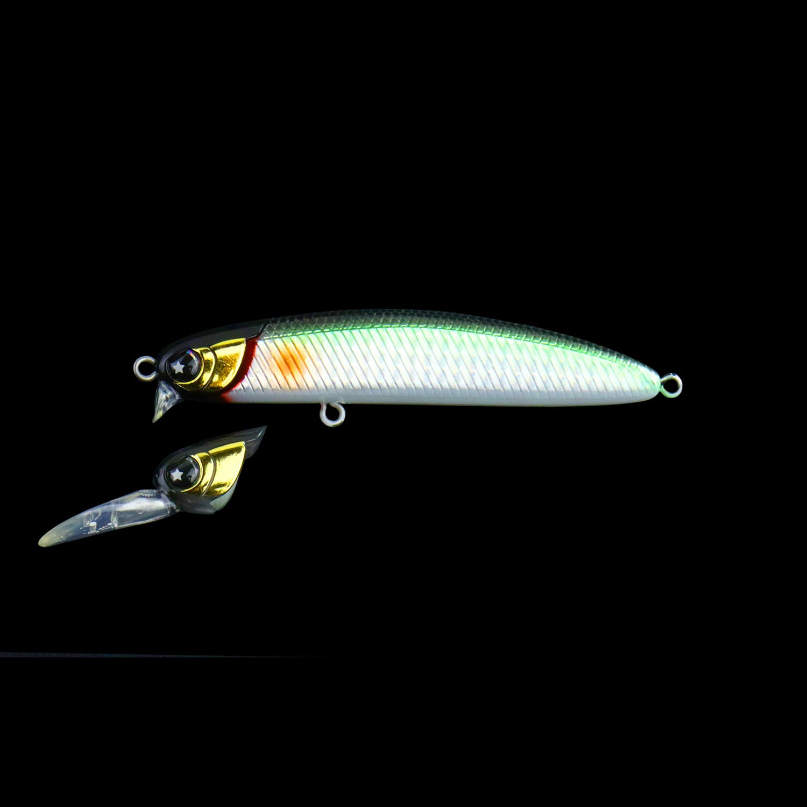
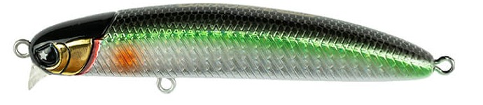
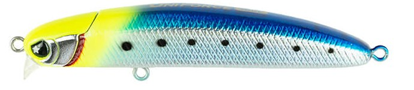
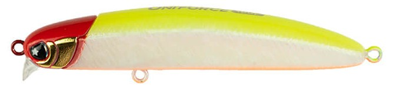
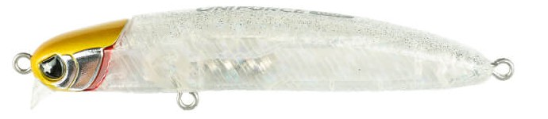
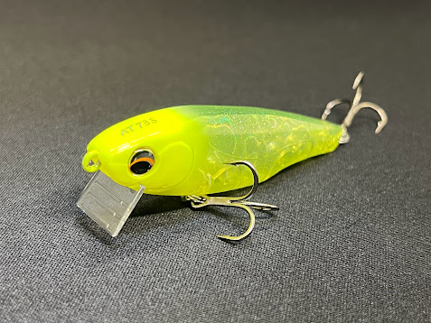

ユニフォース100F
（UNIFORCE100F）
ユニフォース100F（UNIFORCE100F）はLEGARE（レガーレ）のフローティングミノーです。
2020年に安田ヒロキ氏が立ち上げたレガーレのファーストリリースルアーで、コンセプトは「1つのルアーで2つのアクション」。特許技術「MAG HEAD」でヘッドを付け替えるだけで、レンジとアクションを即座に切り替えられる可変式ミノーです。

画像出典:LEGARE公式HP
スペック
- メーカー
- LEGARE（レガーレ）
- タイプ
- フローティング
- 全長
- 100mm
- 自重
- ショートリップ：17.5g／ロングリップ：19g
- レンジ
- ショートリップ：20〜40cm／ロングリップ：100cm〜
- フック
- #4×2
- アクション
- ヴァリアブルウォブンロール
- ターゲット
- シーバス
- 価格
- 2,980円（公式オンラインストア）
▼今すぐチェック

ユニフォース100Fの特徴
ヘッドを付け替えるだけで、表層用と中層用の2本分の仕事をこなすミノー
-
特許技術「MAG HEAD」でヘッドを素早く交換
ヘッドとボディに高磁力のネオジム磁石を内蔵し、取り外し可能なヘッドを素早く確実に固定する特許技術（特許第7075690号）。フィールドでもスナップを外さずにヘッドを付け替えられる。
-
ショートリップとロングリップで2つの泳ぎ
ショートリップはレンジ20〜40cmの表層をローリングアクションで、ロングリップはレンジ100cm〜の中層をウォブンロールアクションで泳ぐ。レンジもアクションも違う2本のミノーを1本で持ち歩ける。
-
8mmウエイトボールの重心移動で飛距離も確保
同クラスのルアーと比べて大きい8mmのウエイトボールを重心移動システムで動かし、飛距離を稼げる。都市型河川・河口・ボートシーバス・磯・サーフまで、幅広いフィールドに対応する。
ユニフォース100Fの使い方
まずはショートリップで表層20〜40cmをただ巻きで探り、反応が無ければロングリップに付け替えて100cm〜の中層を探る、という流れが基本。
どちらのヘッドもスロー〜ミディアムのただ巻きで性能を発揮する。状況が変わったときにルアーを結び替えず、ヘッドだけ交換して同じシルエットのままレンジとアクションを変えられるのがユニフォースならではの使い方です。
ユニフォース100Fの得意な状況
都市型河川・河口・ボートシーバス・磯・サーフと、メーカーが「あらゆるシチュエーション」で使えるとしている汎用性の高い1本。
特に、潮位や時間帯で魚の付くレンジが変わる場面や、荷物を減らしたいランガンで強い。表層に出ない魚を一段下で拾いたいときも、ヘッド交換だけで対応できます。
ワンポイント
同じポイントで「ショートリップで表層 → ロングリップで中層」と順番に通すと、魚がいるレンジを効率よく絞り込めます。
付け替えたヘッドは、使う前にしっかり固定されているかを一度確認してからキャストすると安心です。
ショートリップとロングリップの使い分け
| モデル | 全長／自重 | 得意な場面 |
|---|---|---|
| ショートリップ | 100mm／17.5g | レンジ20〜40cmの表層をローリングアクションで。シャローや表層に浮いた魚に |
| ロングリップ | 100mm／19g | レンジ100cm〜の中層をウォブンロールアクションで。表層に出ない魚や深めのレンジに |
ユニフォースはヘッドの交換だけでレンジとアクションを切り替えられる。表層から探り始め、反応が無ければ中層へ、とレンジを順番に探っていくのがオススメです。
人気カラー
ユニフォース100Fは全9色展開（WEB限定カラーを含む）。シーバス狙いでオススメのカラーを厳選して紹介します。

ボラシャイナーボラ（イナッコ）をイメージしたナチュラル系。河川や河口のデイゲームの基本。

チャーディンチャートヘッドのイワシ系。視認性とナチュラルさを両立したい場面に。

チャールレッドヘッドにチャートとパールを合わせた高アピールカラー。濁りやナイトゲームに。

スパークリングクリアラメ入りのクリア系。澄み潮や常夜灯周りで存在感を抑えたいときに。
画像出典:LEGARE公式HP
ユニフォース100Fに似ているルアー
-

オルター73S ピックアップ 詳細はこちら＞全長73mm・自重12.5gのシンキングペンシル。リップを交換してレンジとアクションを切り替えられるという「1本2役」の発想がユニフォース100Fに最も近い。ユニフォースはヘッドごと交換するフローティングミノーという違いがある。
-
 VADUM125F（ヴァダム125F）
レガーレ
詳細はこちら＞
VADUM125F（ヴァダム125F）
レガーレ
詳細はこちら＞
同じレガーレの125mmシャローランナー。アピールを抑えたロール主体のアクションで、ユニフォースのショートリップよりもナチュラルに表層を見せたいときに選びたい1本。
-
 コモモSF-125
ima
詳細はこちら＞
コモモSF-125
ima
詳細はこちら＞
全長125mmのシャローランナーの定番。水面直下〜50cm前後を得意とし、ユニフォースのショートリップと同じく表層のシーバスを狙うサーチベイトとして使い分けられる。